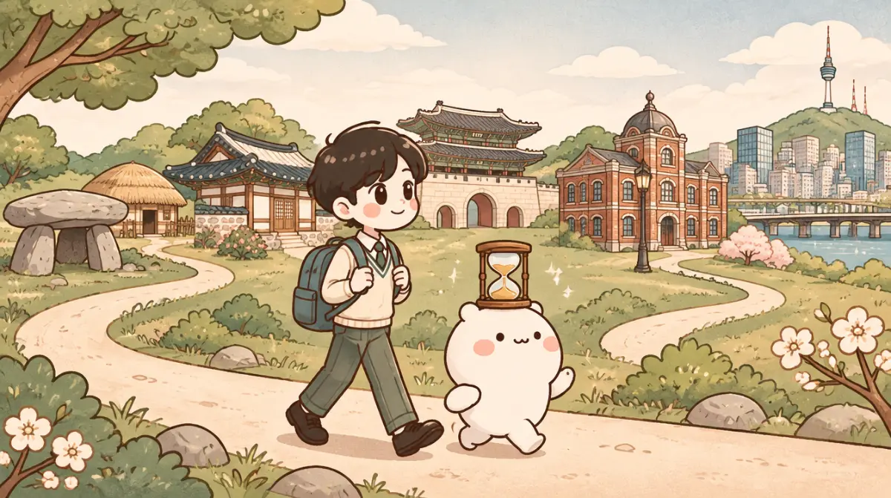

3학년 한국사 총복습 · 비상교육 역사②
⏳ 시대를 건너 살아남기
선사 시대부터 오늘까지, 시대마다 다시 태어나 갈림길을 건너는 게임이야.
그 시대를 잘못 알면 죽어. 시대마다 등불은 3개뿐이야.

🪪 누구니?
주인공과 주변 사람들은 꾸며 낸 인물이야. 역사 사실은 교과서에서 가져왔어.
🧑🎨 시대를 건널 이름
실명 말고, 시대를 건널 주인공의 이름을 지어 줘.
🏮 등불 시대를 잘못 알면 등불이 하나 꺼지고 그 갈림길로 돌아와. 시대마다 3개야.
📜 사료 둘러볼 수 있는 곳은 정해져 있어. 모은 사료는 근거를 댈 때 써. 틀린 사료를 내도 등불이 꺼져.
💀 도감 죽음도 모여. 어떤 죽음이 있는지 찾아봐.
🛟 구출 등불이 다 꺼지면 옆 친구를 불러.
🔒 이 시대는 다음 시간에 열려. 지금까지 한 건 저장돼 있어. 선생님 신호를 기다려 줘.
💀
새로운 죽음이 도감에 남았다
기억
🛟 등불이 모두 꺼졌어
옆 친구를 불러 줘. 친구가 자기가 모은 사료를 보여 주면서 이 갈림길을 말로 설명해 주는 거야.
실제 역사
🧭 네가 지나온 길
0자
🧭 자유 탐험
등불 걱정 없이 어떤 사건이든 다시 해 봐. 제출한 기록은 바뀌지 않고, 새로 본 죽음만 도감에 더해져.